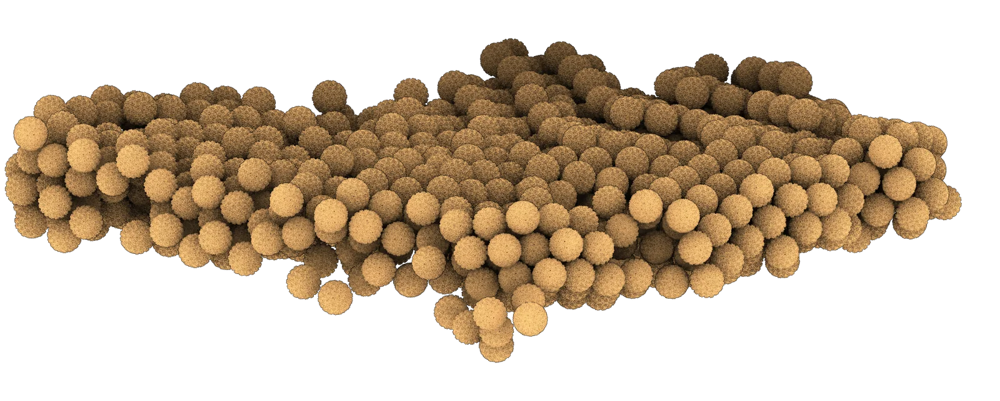
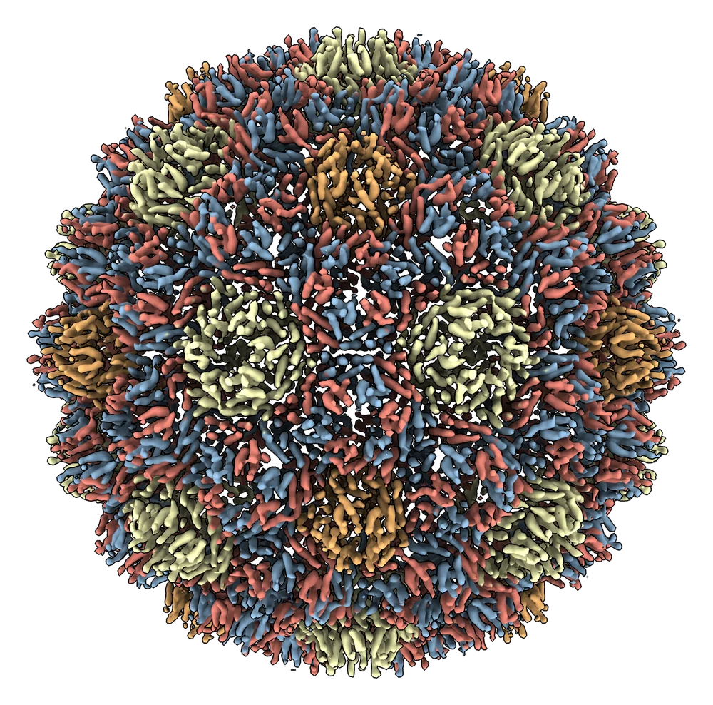
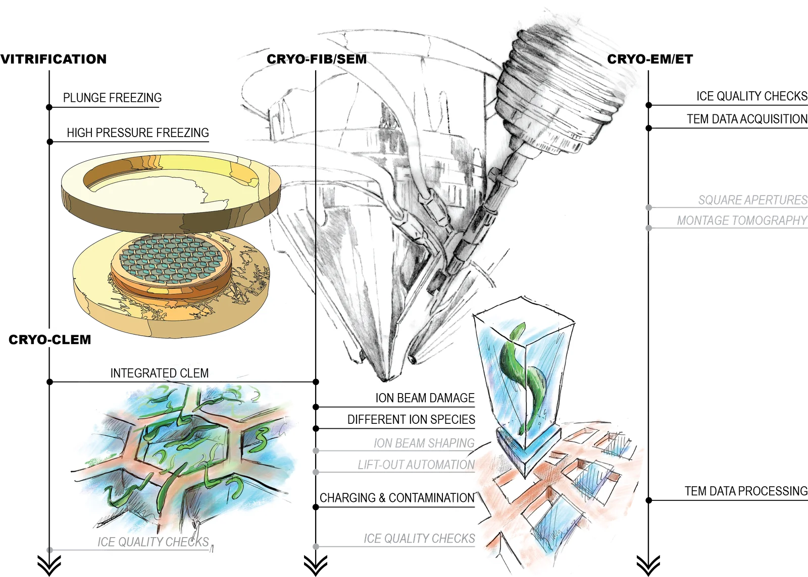
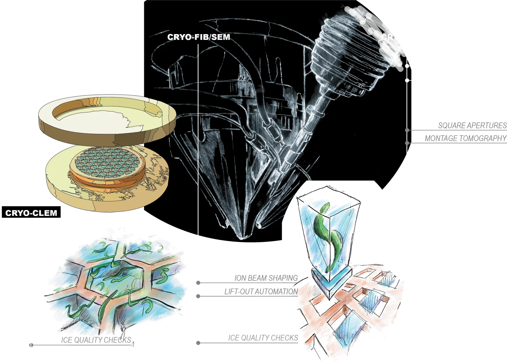
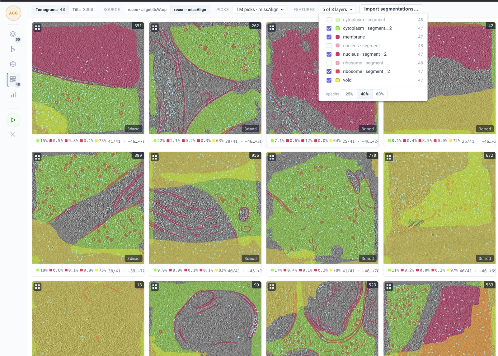

Klumpe Lab · IMP & IMBA · Vienna
Seeing the molecular machinery of life where it works.
We develop and apply technologies for in situ structural biology. With cryo-electron tomography and cryo-FIB milling, we study transposons and other molecular machines directly inside cells and tissues.


Transposons inside cells
What do jumping genes look like, at molecular resolution, in the cells where they replicate?


Cryo-FIB technology
Automation, lift-out and new beam strategies to bring cryo-ET to tissues and whole organisms.

Open-source software development
fibsemOS for controlling and automating FIB-SEM microscopes, plus software to analyse cryo-ET data and genomic data for exploring active transposable elements.